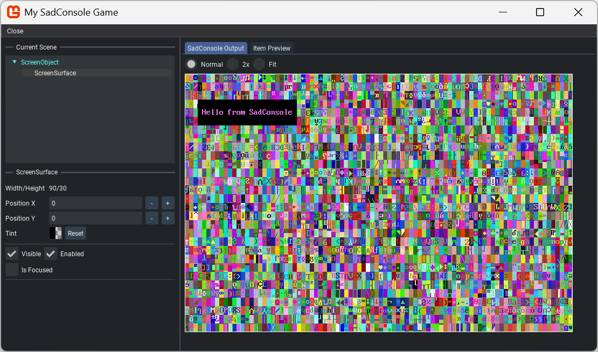

How to enable the SadConsole debugger
The debugger is a helper library that pauses SadConsole and displays a UI over the top of the game, letting you inspect objects. You can alter object properties and provide your own debug UI that integrates with SadConsole.
Enable the debugger
- Add the SadConsole.Debug.MonoGame NuGet package to your project.
- Add
EnableImGuiDebuggerto the configuration builder. Provide the key that enables the debugger.
using SadConsole.Configuration;
using SadConsole.Input;
Settings.WindowTitle = "My SadConsole Game";
Builder gameStartup = new Builder()
.SetScreenSize(GameSettings.GAME_WIDTH, GameSettings.GAME_HEIGHT)
.SetStartingScreen<SCTesting.Scenes.RootScreen>()
.IsStartingScreenFocused(true)
.ConfigureFonts(true)
.EnableImGuiDebugger(Keys.F12)
;
Game.Create(gameStartup);
Game.Instance.Run();
Game.Instance.Dispose();
Once the game is running, press the referenced key, F12 in this example, and the SadConsole Debugger turns on.

Parts of the debugger
The top-left of the debugger lists the current scene. The object that's focused is displayed in cyan. When you select an object, it's basic properties are displayed.
The center of the screen displays the render output that SadConsole draws on the screen. If the currently selected object is a IScreenSurface, the second tab displays the render output for that object.
Debugger events
The debugger provides two events, SadConsole.Debug.Debugger.Opened and SadConsole.Debug.Debugger.Closed. The Opened event has a single parameter, a boolean that indicates whether or not this is the first time the debugger is opened.
The Opened event gives you an opportunity to customize the debugger once it starts. You can provide event handlers for these events on the configuration object used to control the SadConsole startup.